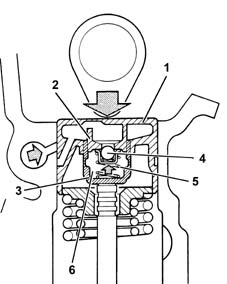
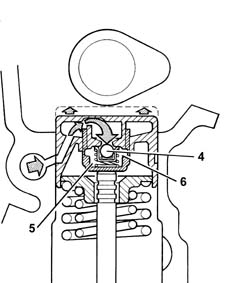
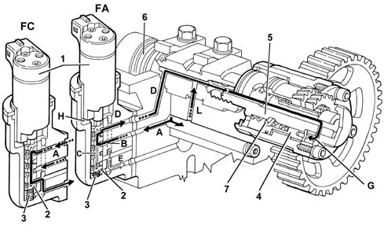
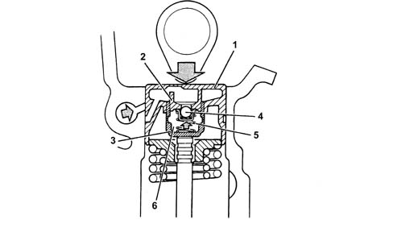
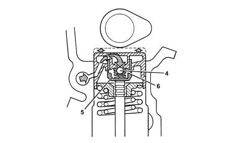
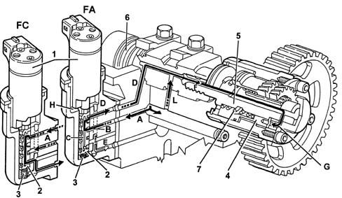

1036C overhead camshafts (2)
- Path
- Descriptions > 10 ENGINE > 1036 TIMING SYSTEM > 1036C overhead camshafts (2)
- Kind
- system description
- Applies to
- engines: 1.6 TS , 1.8 TS, 2.0 JTS, 2.0 JTS; all production periods
- Interactive page
- https://sloeber94.github.io/elrnDB-a156/en/#/3232834
Applies to: engines: 1.6 TS , 1.8 TS; all production periods
Camshaft
The camshaft on the inlet side rotates in six bearings, the one on the exhaust side in five.
The camshafts are driven by toothed belt (see 1032).
Hydraulic tappets
The hydraulic tappets automatically cancel the valve clearance during engine operation, with the advantage of reducing:
- maintenance interventions
- engine noise.
Operation in open stage
When the camshaft cam acts on the cup (1) and consequently the piston (2), the oil trapped in the chamber (6), because the ball valve (4) closes, transmits the movement of the piston (2) directly to the sleeve (3) and so to the valve. During this stage, because of the high pressure to which it is subjected, some of the oil in the chamber (6) leaks through the tiny gap between the piston (2) and sleeve (3).

Operation in closed stage
While the valve is closed, so that the tappet, pushed by the action of the spring (5), follows the profile of the cam, a vacuum is created inside the chamber (6) which causes the ball valve (4) to open, allowing oil to enter. The oil entering the chamber (6) replaces the oil which leaked out previously while the valve was open.

Variable valve timing
Controlled directly by the fuel injection control unit, the purpose of the variable valve timing system iis to vary the timing of the inlet valves in accordance with the engine load and required rpm.
Operation in closed stage (fc)
When the closed stage is required (idle speed and maximum power zone), the solenoid (1) is de-energized, so the slide valve (2), pushed by the return spring (3), remains raised, preventing the oil coming from the duct (A) from reaching the VVT.
In this case the timing of the inlet valves remains unchanged (closed).
Operation in open stage (os)
When the open stage is required (medium rpm with high torque), the solenoid (1) is energized, thus pushing the slide valve (2) downwards.
In this position, the oil coming from the duct (A) enters the chamber (B) of the piston, and from here, through a special hole, goes into the duct (C) in the piston.
The oil can only emerge from this duct through the top hole (in communication with the delivery pipe (D) to the variator), since the bottom hole, as the slide valve (2) has lowered, is not in communication with the discharge pipe (E).
The oil passes through the duct (D) and (F) and reaches the chamber (G), pushing in an axial direction towards the engine the piston (4), which comprises outer helical teeth, forcing it to rotate clockwise.
Its rotation is transmitted via a straight-teeth splined profile to the pinion (5) which, screwed onto the threaded end of the camshaft (6), transmits rotation to the camshaft, thus varying by 25° engine the timing of the inlet valves.
When the solenoid is de-energized, the slide valve (2) returns to its initial position, cutting off the flow of pressurized oil to the piston (4), but allowing oil to return to the discharge, thanks to the force of the return spring (7).
The duct (D) lubricates the camshaft journal in the various operating conditions.
The oil which leaks into the chamber (H) of the solenoid is discharged through the drain duct (E).

Applies to: engines: 2.0 JTS, 2.0 JTS; all production periods
CONSTRUCTION FEATURES
Camshafts
The camshaft on the inlet side rotates on six bearings, the one on the exhaust side on five.
The camshafts are driven by a toothed belt.
Hydraulic tappets
The hydraulic tappets automatically cancel the valve clearance during engine operation, with the advantage of reducing:
- maintenance operations;
- engine noise.
Operation in open stage
When the camshaft cam acts on the cup (1) and consequently the piston (2), the oil trapped in the chamber (6), because the ball valve (4) closes, transmits the movement of the piston (2) directly to the sleeve (3) and so to the valve.
During this stage, because of the high pressure to which it is subjected, some of the oil in the chamber (6) leaks through the tiny gap between the piston (2) and sleeve (3).

Operation in closed stage
While the valve is closed, so that the tappet, pushed by the action of the spring (5), follows the profile of the cam, a vacuum is created inside the chamber (6) which causes the ball valve (4) to open, allowing oil to enter. The oil entering the chamber (6) replaces the oil which leaked out previously while the valve was open.

Timing variator
Controlled directly by the fuel injection control unit, the purpose of the phase transformer is to vary the timing of the inlet valves in accordance with the engine load and required rpm.
Operation in closed stage (fc)
When the closed stage is required (idle speed and maximum power zone), the solenoid (1) is de-energized, so the slide valve (2), pushed by the return spring (3), remains raised, preventing the oil coming from the duct (A) from reaching the variator.
In this case the timing of the inlet valves remains unchanged (closed).
Operation in open stage (os)
When the open stage is required (medium rpm with high torque). The solenoid (1) is energized, thus pushing the slide valve (2) downwards.
In this position, the oil coming from the duct (A) enters the chamber (B) of the piston, and from here, through a special hole, goes into the duct (C) in the piston.
The oil can only emerge from this duct through the top hole (in communication with the delivery pipe (D) to the variator), since the bottom hole, as the slide valve (2) has lowered, is not in communication with the discharge pipe (E).
The oil passes through the duct (D) and (F) and reaches the chamber (G), pushing in an axial direction towards the engine the piston (4), which comprises outer helical teeth, forcing it to rotate clockwise.
Its rotation is transmitted via a straight-teeth splined profile to the pinion (5) which, screwed onto the threaded end of the camshaft (6), transmits rotation to the camshaft, thus varying by 25° engine the timing of the inlet valves.
When the solenoid is de-energized, the slide valve (2) returns to its initial position, cutting off the flow of pressurized oil to the piston (4), but allowing oil to return to the discharge, thanks to the force of the return spring (7).
The duct (D) lubricates the camshaft journal in the various operating conditions.
The oil which leaks into the chamber (H) of the solenoid is discharged through the drain duct (E).
